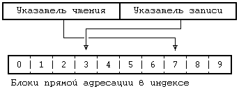

Каналы позволяют передавать данные между процессами в порядке поступления ("первым пришел - первым вышел"), а также синхронизировать выполнение процессов. Их использование дает процессам возможность взаимодействовать между собой, пусть даже не известно, какие процессы находятся на другом конце канала. Традиционная реализация каналов использует файловую систему для хранения данных. Различают два вида каналов: поименованные каналы и, за отсутствием лучшего термина, непоименованные каналы, которые идентичны между собой во всем, кроме способа первоначального обращения к ним процессов. Для поименованных каналов процессы используют системную функцию open, а системную функцию pipe - для создания непоименованного канала. Впоследствии, при работе с каналами процессы пользуются обычными системными функциями для файлов, такими как read, write и close. Только связанные между собой процессы, являющиеся потомками того процесса, который вызвал функцию pipe, могут разделять доступ к непоименованным каналам. Например (см. Рисунок 5.15), если процесс B создает канал и порождает процессы D и E, эти три процесса разделяют между собой доступ к каналу, в отличие от процессов A и C. Однако, все процессы могут обращаться к поименованному каналу независимо от взаимоотношений между ними, при условии наличия обычных прав доступа к файлу. Поскольку непоименованные каналы встречаются чаще, они будут рассмотрены первыми.
Синтаксис вызова функции создания канала:
pipe(fdptr);
где fdptr - указатель на массив из двух целых переменных, в котором будут храниться два дескриптора файла для чтения из канала и для записи в канал. Поскольку ядро реализует каналы внутри файловой системы и поскольку канал не существует до того, как его будут использовать, ядро должно при создании канала назначить ему индекс. Оно также назначает для канала пару пользовательских дескрипторов и соответствующие им записи в таблице файлов: один из дескрипторов для чтения из канала, а другой для записи в канал. Поскольку ядро пользуется таблицей файлов, интерфейс для вызова функций read, write и др. согласуется с интерфейсом для обычных файлов. В результате процессам нет надобности знать, ведут ли они чтение или запись в обычный файл или в канал.
алгоритм pipe
входная информация: отсутствует
выходная информация: дескриптор файла для чтения
дескриптор файла для записи
{
назначить новый индекс из устройства канала (алгоритм
ialloc);
выделить одну запись в таблице файлов для чтения, одну -
для переписи;
инициализировать записи в таблице файлов таким образом,
чтобы они указывали на новый индекс;
выделить один пользовательский дескриптор файла для чте-
ния, один - для записи, проинициализировать их таким
образом, чтобы они указывали на соответствующие точки
входа в таблице файлов;
установить значение счетчика ссылок в индексе равным 2;
установить значение счетчика числа процессов, производя-
щих чтение, и процессов, производящих запись, равным 1;
}
|
Рисунок 5.16. Алгоритм создания каналов (непоименованных)
На Рисунке 5.16 показан алгоритм создания непоименованных каналов. Ядро назначает индекс для канала из файловой системы, обозначенной как "устройство канала", используя алгоритм ialloc. Устройство канала - это именно та файловая система, из которой ядро может назначать каналам индексы и выделять блоки для данных. Администраторы системы указывают устройство канала при конфигурировании системы и эти устройства могут совпадать у разных файловых систем. Пока канал активен, ядро не может переназначить индекс канала и информационные блоки канала другому файлу.
Затем ядро выделяет в таблице файлов две записи, соответствующие дескрипторам для чтения и записи в канал, и корректирует "бухгалтерскую" информацию в копии индекса в памяти. В каждой из выделенных записей в таблице файлов хранится информация о том, сколько экземпляров канала открыто для чтения или записи (первоначально 1), а счетчик ссылок в индексе указывает, сколько раз канал был "открыт" (первоначально 2 - по одному для каждой записи таблицы файлов). Наконец, в индексе записываются смещения в байтах внутри канала до места, где будет начинаться следующая операция записи или чтения. Благодаря сохранению этих смещений в индексе имеется возможность производить доступ к данным в канале в порядке их поступления в канал ("первым пришел первым вышел"); этот момент является особенностью каналов, поскольку для обычных файлов смещения хранятся в таблице файлов. Процессы не могут менять эти смещения с помощью системной функции lseek и поэтому произвольный доступ к данным канала невозможен.
Поименованный канал - это файл, имеющий почти такую же семантику, как и непоименованный канал, за исключением того, что этому файлу соответствует запись в каталоге и обращение к нему производится по имени. Процессы открывают поименованные каналы так же, как и обычные файлы, и, следовательно, с помощью поименованных каналов могут взаимодействовать между собой даже процессы, не имеющие друг к другу близкого отношения. Поименованные каналы постоянно присутствуют в иерархии файловой системы (из которой они удаляются с помощью системной функции unlink), а непоименованные каналы являются временными: когда все процессы заканчивают работу с каналом, ядро отбирает назад его индекс.
Алгоритм открытия поименованного канала идентичен алгоритму открытия обычного файла. Однако, перед выходом из функции ядро увеличивает значения тех счетчиков в индексе, которые показывают количество процессов, открывших поименованный канал для чтения или записи. Процесс, открывающий поименованный канал для чтения, приостановит свое выполнение до тех пор, пока другой процесс не откроет поименованный канал для записи, и наоборот. Не имеет смысла открывать канал для чтения, если процесс не надеется получить данные; то же самое касается записи. В зависимости от того, открывает ли процесс поименованный канал для записи или для чтения, ядро возобновляет выполнение тех процессов, которые были приостановлены в ожидании процесса, записывающего в поименованный канал или считывающего данные из канала (соответственно).
Если процесс открывает поименованный канал для чтения, причем процесс, записывающий в канал, существует, открытие завершается. Или если процесс открывает поименованный файл с параметром "no delay", функция open возвращает управление немедленно, даже когда нет ни одного записывающего процесса. Во всех остальных случаях процесс приостанавливается до тех пор, пока записывающий процесс не откроет канал. Аналогичные правила действуют для процесса, открывающего канал для записи.
Канал следует рассматривать под таким углом зрения, что процессы ведут запись на одном конце канала, а считывают данные на другом конце. Как уже говорилось выше, процессы обращаются к данным в канале в порядке их поступления в канал; это означает, что очередность, в которой данные записываются в канал, совпадает с очередностью их выборки из канала. Совпадение количества процессов, считывающих данные из канала, с количеством процессов, ведущих запись в канал, совсем не обязательно; если одно число отличается от другого более, чем на 1, процессы должны координировать свои действия по использованию канала с помощью других механизмов. Ядро обращается к данным в канале точно так же, как и к данным в обычном файле: оно сохраняет данные на устройстве канала и назначает каналу столько блоков, сколько нужно, во время выполнения функции write. Различие в выделении памяти для канала и для обычного файла состоит в том, что канал использует в индексе только блоки прямой адресации в целях повышения эффективности работы, хотя это и накладывает определенные ограничения на объем данных, одновременно помещающихся в канале. Ядро работает с блоками прямой адресации индекса как с циклической очередью, поддерживая в своей структуре указатели чтения и записи для обеспечения очередности обслуживания "первым пришел - первым вышел" (Рисунок 5.17).
Рассмотрим четыре примера ввода-вывода в канал: запись в канал, в котором есть место для записи данных; чтение из канала, в котором достаточно данных для удовлетворения запроса на чтение; чтение из канала, в котором данных недостаточно; и запись в канал, где нет места для записи.

Рисунок 5.17. Логическая схема чтения и записи в канал
Рассмотрим первый случай, в котором процесс ведет запись в канал, имеющий место для ввода данных: сумма количества записываемых байт с числом байт, уже находящихся в канале, меньше или равна емкости канала. Ядро следует алгоритму записи данных в обычный файл, за исключением того, что оно увеличивает размер канала автоматически после каждого выполнения функции write, поскольку по определению объем данных в канале растет с каждой операцией записи. Иначе происходит увеличение размера обычного файла: процесс увеличивает размер файла только тогда, когда он при записи данных переступает границу конца файла. Если следующее смещение в канале требует использования блока косвенной адресации, ядро устанавливает значение смещения в пространстве процесса таким образом, чтобы оно указывало на начало канала (смещение в байтах, равное 0). Ядро никогда не затирает данные в канале; оно может сбросить значение смещения в 0, поскольку оно уже установило, что данные не будут переполнять емкость канала. Когда процесс запишет в канал все свои данные, ядро откорректирует значение указателя записи (в индексе) канала таким образом, что следующий процесс продолжит запись в канал с того места, где остановилась предыдущая операция write. Затем ядро возобновит выполнение всех других процессов, приостановленных в ожидании считывания данных из канала.
Когда процесс запускает функцию чтения из канала, он проверяет, пустой ли канал или нет. Если в канале есть данные, ядро считывает их из канала так, как если бы канал был обычным файлом, выполняя соответствующий алгоритм. Однако, начальным смещением будет значение указателя чтения, хранящегося в индексе и показывающего протяженность прочитанных ранее данных. После считывания каждого блока ядро уменьшает размер канала в соответствии с количеством считанных данных и устанавливает значение смещения в пространстве процесса так, чтобы при достижении конца канала оно указывало на его начало. Когда выполнение системной функции read завершается, ядро возобновляет выполнение всех приостановленных процессов записи и запоминает текущее значение указателя чтения в индексе (а не в записи таблицы файлов).
Если процесс пытается считать больше информации, чем фактически есть в канале, функция read завершится успешно, возвратив все данные, находящиеся в данный момент в канале, пусть даже не полностью выполнив запрос пользователя. Если канал пуст, процесс обычно приостанавливается до тех пор, пока какой-нибудь другой процесс не запишет данные в канал, после чего все приостановленные процессы, ожидающие ввода данных, возобновят свое выполнение и начнут конкурировать за чтение из канала. Если, однако, процесс открывает поименованный канал с параметром "no delay" (без задержки), функция read возвратит управление немедленно, если в канале отсутствуют данные. Операции чтения и записи в канал имеют ту же семантику, что и аналогичные операции для терминальных устройств (глава 10), она позволяет процессам игнорировать тип тех файлов, с которыми эти программы имеют дело.
Если процесс ведет запись в канал и в канале нет места для всех данных, ядро помечает индекс и приостанавливает выполнение процесса до тех пор, пока канал не начнет очищаться от данных. Когда впоследствии другой процесс будет считывать данные из канала, ядро заметит существование процессов, приостановленных в ожидании очистки канала, и возобновит их выполнение подобно тому, как это было объяснено выше. Исключением из этого утверждения является ситуация, когда процесс записывает в канал данные, объем которых превышает емкость канала (то есть, объем данных, которые могут храниться в блоках прямой адресации); в этом случае ядро записывает в канал столько данных, сколько он может вместить в себя, и приостанавливает процесс до тех пор, пока не освободится дополнительное место. Таким образом, возможно положение, при котором записываемые данные не будут занимать непрерывное место в канале, если другие процессы ведут запись в канал в то время, на которое первый процесс прервал свою работу.
Анализируя реализацию каналов, можно заметить, что интерфейс процессов согласуется с интерфейсом обычных файлов, но его воплощение отличается, так как ядро запоминает смещения для чтения и записи в индексе вместо того, чтобы делать это в таблице файлов. Ядро вынуждено хранить значения смещений для поименованных каналов в индексе для того, чтобы процессы могли совместно использовать эти значения: они не могли бы совместно использовать значения, хранящиеся в таблице файлов, так как процесс получает новую запись в таблице файлов по каждому вызову функции open. Тем не менее, совместное использование смещений чтения и записи в индексе наблюдалось и до реализации поименованных каналов. Процессы, обращающиеся к непоименованным каналам, разделяют доступ к каналу через общие точки входа в таблицу файлов, поэтому они могли бы по умолчанию хранить смещения записи и чтения в таблице файлов, как это принято для обычных файлов. Это не было сделано, так как процедуры низкого уровня, работающие в ядре, больше не имеют доступа к записям в таблице файлов: программа упростилась за счет того, что процессы совместно используют значения смещений, хранящиеся в индексе.
При закрытии канала процесс выполняет ту же самую процедуру, что и при закрытии обычного файла, за исключением того, что ядро, прежде чем освободить индекс канала, выполняет специальную обработку. Оно уменьшает количество процессов чтения из канала или записи в канал в зависимости от типа файлового дескриптора. Если значение счетчика числа записывающих в канал процессов становится равным 0 и имеются процессы, приостановленные в ожидании чтения данных из канала, ядро возобновляет выполнение последних и они завершают свои операции чтения без возврата каких-либо данных. Если становится равным 0 значение счетчика числа считывающих из канала процессов и имеются процессы, приостановленные в ожидании возможности записи данных в канал, ядро возобновляет выполнение последних и посылает им сигнал (глава 7) об ошибке. В обоих случаях не имеет смысла продолжать держать процессы приостановленными, если нет надежды на то, что состояние канала когда-нибудь изменится. Например, если процесс ожидает возможности производить чтение из непоименованного канала и в системе больше нет процессов, записывающих в этот канал, значит, записывающий процесс никогда не появится. Несмотря на то, что если канал поименованный, в принципе возможно появление нового считывающего или записывающего процесса, ядро трактует эту ситуацию точно так же, как и для непоименованных каналов. Если к каналу не обращается ни один записывающий или считывающий процесс, ядро освобождает все информационные блоки канала и переустанавливает индекс таким образом, чтобы он указывал на то, что канал пуст. Когда ядро освобождает индекс обычного канала, оно освобождает для переназначения и дисковую копию этого индекса.
Программа на Рисунке 5.18 иллюстрирует искусственное использование каналов. Процесс создает канал и входит в бесконечный цикл, записывая в канал строку символов "hello" и считывая ее из канала. Ядру не нужно ни знать о том, что процесс, ведущий запись в канал, является и процессом, считывающим из канала, ни проявлять по этому поводу какое-либо беспокойство.
char string[] = "hello";
main()
{
char buf[1024];
char *cp1,*cp2;
int fds[2];
cp1 = string;
cp2 = buf;
while(*cp1)
*cp2++ = *cp1++;
pipe(fds);
for (;;)
{
write(fds[1],buf,6);
read(fds[0],buf,6);
}
}
|
Рисунок 5.18. Чтение из канала и запись в канал
Процесс, выполняющий программу, которая приведена на Рисунке 5.19, создает поименованный канал с именем "fifo". Если этот процесс запущен с указанием второго (формального) аргумента, он постоянно записывает в канал строку символов "hello"; будучи запущен без второго аргумента, он ведет чтение из поименованного канала. Два процесса запускаются по одной и той же программе, тайно договорившись взаимодействовать между собой через поименованный канал "fifo", но им нет необходимости быть родственными процессами. Другие пользователи могут выполнять программу и участвовать в диалоге (или мешать ему).
#include <fcntl.h>
char string[] = "hello";
main(argc,argv)
int argc;
char *argv[];
{
int fd;
char buf[256];
/* создание поименованного канала с разрешением чтения и
записи для всех пользователей */
mknod("fifo",010777,0);
if(argc == 2)
fd = open("fifo",O_WRONLY);
else
fd = open("fifo",O_RDONLY);
for (;;)
if(argc == 2)
write(fd,string,6);
else
read(fd,buf,6);
}
|
Рисунок 5.19. Чтение и запись в поименованный канал
Предыдущая глава || Оглавление || Следующая глава
{kind=link}